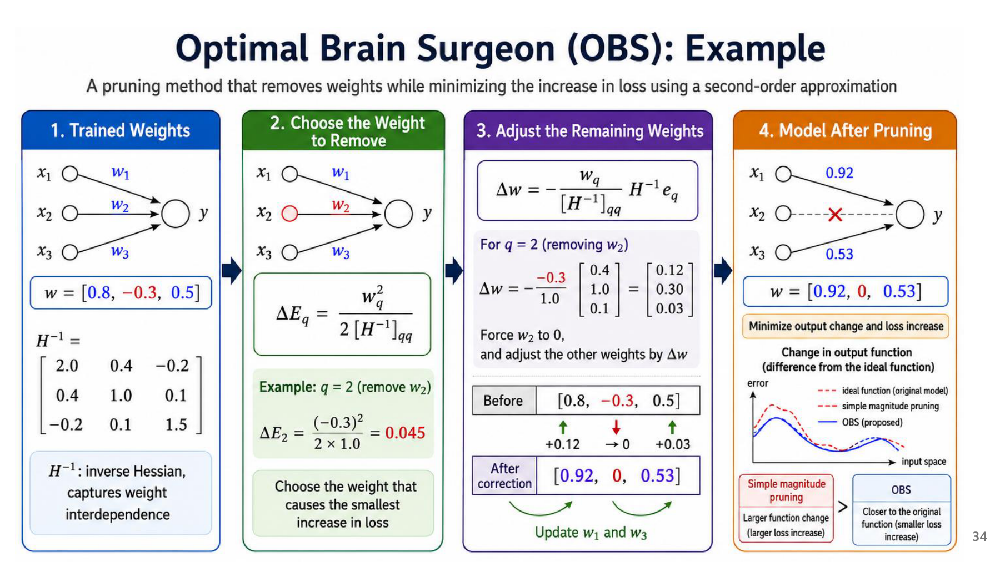
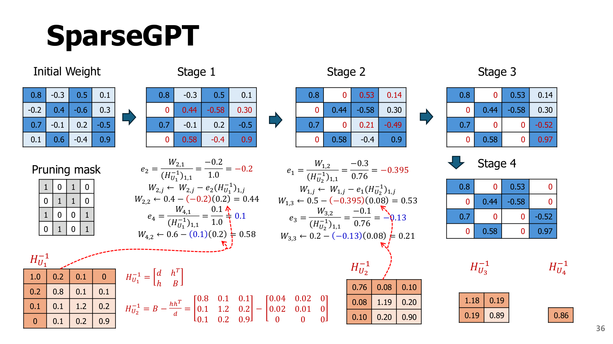
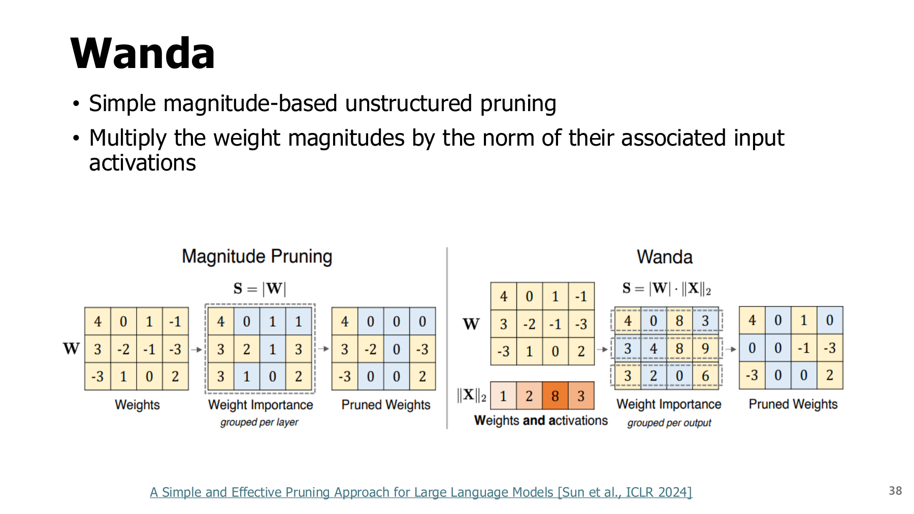

3. LLM 가지치기: 크기, 손실 민감도, activation을 함께 보기
원본 범위: p.29-39
학습 목표
- 가중치 크기·손실 민감도·입력 활성값이 서로 다른 기준임을 설명하기
- OBS의 간단한 보상과 Wanda 점수 계산하기
- 작은 예제의 품질 보존과 실제 장치 가속을 구분하기
읽기 수준
- 첫 학습: 3.1 → 3.2의 교육용 계산 → 3.3의 전후 값 → 3.4·3.5 → 비교표
- 심화 학습: 3.2·3.3의 미분식과 역행렬 조건
시작 전 준비
| 용어 | 이 장에서 필요한 의미 |
|---|---|
| LLM | 많은 텍스트로 학습한 대규모 언어모델 |
| 손실 | 예측 오차를 수치로 나타낸 값. 학습 중 줄이려는 대상 |
| Calibration 입력 | 실제 사용 상황을 대표하도록 준비한 소량의 입력 |
| 재구성 | 변환 전후의 층 출력이 가깝게 되도록 맞추는 과정 |
| Gradient | 가중치를 조금 바꿀 때 손실이 변하는 방향·민감도 |
| Hessian | 여러 가중치에 대한 손실의 곡률·상호작용을 모은 행렬 |
생각할 질문: 같은 크기의 가중치 두 개를 지우면 손실도 똑같이 커질까?
3.1 LLM에서는 무엇이 어려운가? - p.29
문제와 접근
| 어려움 | 대응 방향 |
|---|---|
| 큰 모델 전체를 다시 학습하기에는 메모리·시간이 큼 | 재학습 비용을 줄이는 중요도·보상 방법 사용 |
| 가중치 크기만으로 중요한 연결을 놓칠 수 있음 | 손실 민감도 또는 대표 입력의 활성값 반영 |
원문 수치 주의: p.29의 “magnitude는 10%까지 정확도 보존”은 해당 사례의 맥락이다. 모든 LLM의 공통 임계값이 아니다.
3.2 OBD: 손실 곡률을 반영하기 - p.30-32
OBD(Optimal Brain Damage)는 손실의 곡률을 이용하는 2차 정보 기반 가지치기(Second-Order-based Pruning)다. “크기가 작다”보다 “없애도 손실이 덜 늘어난다”를 기준으로 삼는다. 아래 직관과 후보 비교표를 먼저 읽고, 수식은 계산 근거를 확인할 때 보면 된다.
먼저 직관으로 이해하기
- Magnitude: 숫자가 작은 가중치를 제거한다.
- OBD: 제거했을 때 손실이 덜 커질 것으로 예상되는 가중치를 제거한다.
- 곡률: 같은 크기로 움직여도 손실이 급격히 커지는 곳과 완만히 변하는 곳의 차이다.
산의 경사를 비유로 쓰면 gradient는 현재의 기울기, 곡률은 기울기가 변하는 정도에 대응한다. 실제 모델은 수많은 가중치 방향이 함께 있는 공간이므로 2차원 지형 그림과 완전히 같지는 않다.
독립(Independent)이라는 가정은 무엇인가? OBD는 각 가중치를 제거하는 효과를 따로 평가하기 위해 서로 다른 가중치 변화가 함께 만드는 교차항(Cross-terms)을 생략한다. 실제 신경망의 가중치가 서로 독립이라는 사실을 증명한 것이 아니라, 헤시안(Hessian)의 대각 성분만 남기는 계산상의 근사다. 학습이 수렴해 1차 기울기가 작고, 주변 손실을 2차로 근사할 수 있다는 조건도 함께 필요하다.
심화: 손실 변화의 2차 근사
학습 손실 $L(w)$는 파라미터 벡터 $w$에 따라 변한다. 제거 후 변화를 $\Delta w=w_{new}-w$로 일관되게 정의하면 Taylor 근사는 다음과 같다.
| 기호·조건 | 의미 |
|---|---|
| $g=\nabla L(w)$ | 1차 미분인 gradient |
| $H=\nabla^2L(w)$ | 2차 미분 행렬인 Hessian |
| $g\approx0$ | 학습 수렴 부근에서 기울기가 작다는 가정 |
| 대각 근사 | 서로 다른 가중치 사이의 상호작용을 무시하는 단순화 |
| $\Delta w_i=-w_i$ | 원래 가중치에 이 변화를 더하면 0이 됨 |
OBD(Optimal Brain Damage)의 중요도는 $s_i\approx\frac12H_{ii}w_i^2$가 된다. $H_{ii}$가 모두 같으면 magnitude와 비슷한 순위를 얻지만, 곡률이 다르면 큰 가중치를 제거하는 편이 덜 손해일 수도 있다.
교육용 계산: 작은 가중치를 남기는 경우
| 후보 | 가중치 | 곡률 | OBD 점수 $\frac12H_{ii}w_i^2$ |
|---|---|---|---|
| a | 0.2 | 100 | $0.5\times100\times0.2^2=2$ |
| b | 1 | 1 | $0.5\times1\times1^2=0.5$ |
- Magnitude의 선택: 더 작은 a 제거.
- OBD의 선택: 예상 손실 증가가 더 작은 b 제거.
- 해석: 가중치가 작아도 손실이 민감하게 반응하면 중요한 연결일 수 있다.
OBD 점수는 근사값이다. 수렴·2차·대각 가정이 부정확하면 판단도 부정확해질 수 있다.
정정·주의: p.30-31은 제거량과 손실 차이의 부호 표기가 혼재해 양의 saliency와 혼동될 수 있다. 여기서는 위의 “새 손실 - 기존 손실”과 “새 가중치 - 기존 가중치”를 사용한다. p.32의 학습셋·테스트셋 곡선은 가지치기와 재학습에 따른 변화를 비교하는 사례다. 학습 손실 보존이 일반화 품질 보존을 자동으로 뜻하지는 않는다.
3.3 OBS: 제거한 영향을 다른 가중치로 보상하기 - p.33-34
OBS(Optimal Brain Surgeon)는 OBD에서 생략했던 교차항을 고려하여, 하나를 지우면서 다른 가중치를 함께 조정해 영향을 보상한다. 가령 두 연결이 비슷한 정보를 전달한다면 한 연결을 지울 때 다른 연결의 기여를 늘리는 식이다. 실제 보상 방향은 역헤시안의 가중치 간 관계로 정하며, 단순히 주변 숫자를 모두 키우는 방법은 아니다.
| 방법 | 제거 후 나머지 가중치 |
|---|---|
| 단순 제거 | 원래 값 그대로 둠 |
| OBS | 가중치 사이의 관계를 고려해 변경 |
심화 식의 목적: “q번 가중치는 0”이라는 조건 아래 2차 근사 손실 증가를 최소화한다.
| 기호·조건 | 뜻 |
|---|---|
| $H^{-1}$ | Hessian의 역행렬 |
| $H^{-1}_{:,q}$ | 그 행렬의 q번째 열 전체 |
| $[H^{-1}]_{qq}$ | q번째 대각 성분 |
| 필요한 조건 | $g\approx0$, 안정적인 역행렬, 손실의 2차 근사 |
실제 대형 모델에서는 계산·저장 비용과 수치 안정성이 문제다. 감쇠(damping) 등 안정화 처리가 사용될 수 있다.
원문 표현 주의: “재학습 불필요(No Need for Retraining)”는 제거와 함께 계산한 보상 업데이트로 손실 증가를 억제하므로, 별도의 반복 학습에 의존하지 않으려는 취지다. 남은 가중치를 원래 값 그대로 둔다는 뜻은 아니다. 아래 예제에서도 제거 대상 외의 두 값이 함께 바뀐다. 이는 국소 2차 근사와 안정적인 역행렬을 전제로 하며, 어떤 제거 비율에서도 품질이 유지된다는 보장은 아니다.
다음 그림은 텍스트 추출로 내용이 거의 나오지 않는 p.34다. 선택한 가중치의 업데이트가 정확히 그 값을 상쇄하고, 나머지 두 가중치는 보상 방향으로 바뀌는지를 읽는다.


원문 값은 $w=[0.8,-0.3,0.5]^T$, 역헤시안 두 번째 열은 $[0.4,1,0.1]^T$다. 두 번째 가중치를 제거하면
계산 결과 해석
| 항목 | 결과 |
|---|---|
| 제거할 두 번째 가중치 | $-0.3+0.30=0$ |
| 첫째·셋째 가중치 | 0.8→0.92, 0.5→0.53으로 보상 |
| 근사 손실 증가 | $(-0.3)^2/(2\times1)=0.045$ |
| 전체 후보의 점수 | [0.16,0.045,0.08333…] |
| 최종 선택 | 점수가 가장 작은 두 번째 가중치 |
단순히 -0.3을 0으로 바꾸는 방법과 최종 모델이 다르다.
3.4 SparseGPT: layer 출력 재구성으로 규모를 줄이기 - p.35-37
레이어별(Layer-wise)로 접근하는 이유: 모델 전체의 거대한 헤시안을 직접 다루는 대신, 보정 입력을 사용해 한 선형층의 출력을 가깝게 유지하는 문제를 푼다. OBS의 오차 보상 관점을 대규모 언어 모델(LLM, Large Language Model)에 적용할 수 있도록 계산 범위를 줄이는 것이다.
SparseGPT가 맞추는 대상: 한 층의 출력
선형 층을 $Y=WX$로 나타낸다.
| 기호 | 크기 | 의미 |
|---|---|---|
| $W$ | $m\times d$ | 입력 d개를 출력 m개로 연결하는 가중치 |
| $X$ | $d\times n$ | 대표 입력 n개에서 모은 활성값 |
| $Y$ | $m\times n$ | 원래 층의 출력 |
| $\widehat W$ | $m\times d$ | 가지치기 후의 가중치 |
목표는 $\|WX-\widehat WX\|_F^2$를 줄이는 것이다. $\|\cdot\|_F^2$는 행렬의 각 원소를 제곱해 더한 값으로, 여기서는 출력 차이의 전체 제곱합이다.
구분: 한 층의 출력을 비슷하게 만드는 문제와 전체 과제의 손실을 최소화하는 문제는 같다기보다 관련된 대리 목표다.
처리 흐름
- 대표 입력의 통계에서 2차 정보를 얻는다.
- 가중치를 열 단위로 처리하며 제거 여부를 정한다.
- 생긴 오차를 아직 확정하지 않은 가중치에 전달한다.
- 처리한 부분을 고정하고 다음 부분으로 이동한다.
마스크 선택과 가중치 재구성의 구분(Mask Selection and Weight Reconstruction Are Separated)
| 작업 | 결정하는 것 | 아래 p.36 그림에서 볼 곳 |
|---|---|---|
| 마스크 선택 | 각 위치를 남길지 0으로 만들지 | 왼쪽의 0·1 마스크 |
| 가중치 재구성 | 제거 오차를 줄이도록 남은 값을 어떻게 조정할지 | 오른쪽 단계별 가중치 변화 |
교안 그림은 마스크를 주고 열을 하나씩 처리하는 복원 흐름이다. 처리한 왼쪽 열은 고정하고, 아직 확정하지 않은 오른쪽 열만 조정한다. 그래서 전체 가중치를 매번 다시 최적화하는 비용을 줄일 수 있다. 보정(Calibration) 입력은 실제 사용을 대표해야 한다.
원 논문과의 연결: 이 구분을 “모든 마스크를 처음 한 번만 정하고 끝낸다”로 외우면 안 된다. 실제 SparseGPT의 적응적 마스크 선택은 열 블록마다 이전 보상으로 바뀐 가중치도 반영한다. 선택과 복원은 구분되는 역할이지만 전체 실행에서는 번갈아 연결될 수 있다. 원 논문 3.2절을 함께 참고한다.


그림에서 1은 유지, 0은 제거다. 첫 열에서 $W_{2,1}=-0.2$를 제거할 때 보정량 $e=-0.2/1.0=-0.2$를 써서 다음 값은 $0.4-(-0.2)(0.2)=0.44$가 된다. 네 번째 행에서는 $0.6-(0.1)(0.2)=0.58$이다. 그림의 나머지 값은 소수점 반올림이 섞인 설명용 전개이므로 원 논문의 고성능 구현과 같은 코드로 취급하지 않는다.
정정·주의: p.35의 GTPQ는 문맥상 GPTQ 오기로 읽는다. SparseGPT는 GPTQ와 2차 정보·layer별 재구성이라는 연관이 있지만, 가지치기와 양자화는 서로 다른 변환이다. p.37의 OPT-175B·BLOOM-176B, 60% 희소성, 4.5시간 이내는 원 연구 조건의 결과다. 현재 장치의 처리 시간이나 모든 모델의 품질 보장이 아니다. SparseGPT 원 논문.
혼란도(PPL, Perplexity)로 결과 읽기: 정답으로 주어진 다음 토큰에 모델이 얼마나 높은 확률을 주는지 요약한 언어모델 평가값이다. 같은 데이터·토큰화·문맥 길이·평가 방식에서는 낮을수록 정답 토큰을 더 잘 예측한다. 가지치기 비율이 높아질 때 PPL이 급격히 오르면 예측 품질을 잃고 있다는 신호다. p.37의 “PPL 증가가 작다”는 품질 보존 결과이며, 메모리 절감률이나 실행 속도 자체를 뜻하지 않는다.
3.5 Wanda: 가중치와 입력 activation의 곱으로 보기 - p.38-39
Wanda(Weights and activations)는 위 표기에서 입력 채널 j의 calibration 벡터 norm을 사용한다.
같은 출력 행에서 점수가 작은 연결을 제거한다. activation norm이 크면 같은 가중치라도 출력에 큰 영향을 줄 수 있다는 직관이다. 원래 Wanda는 이 점수로 고르고 남은 값을 재구성하는 업데이트 없이 사용하는 방법이다.


그림 읽기
- 왼쪽: 가중치 절댓값만 사용하는 magnitude.
- 오른쪽: 입력 활성값 norm을 곱하는 Wanda.
- norm: 여러 입력에서 관찰한 활성값의 크기를 한 숫자로 요약한 값.
- 비교 질문: 원래 가중치는 같아도 어떤 입력 열이 자주 크게 활성화되는지 반영하면 제거 위치가 어떻게 달라지는가?
교육용 계산
| 입력 채널 | 가중치 | 입력 norm | Wanda 점수 |
|---|---|---|---|
| 첫째 | 0.1 | 10 | $0.1\times10=1$ |
| 둘째 | 0.5 | 1 | $0.5\times1=0.5$ |
- Magnitude: 작은 가중치인 첫째 연결 제거.
- Wanda: 작은 점수인 둘째 연결 제거.
- 이유: 첫째 입력의 크기가 커서 작은 가중치라도 기여가 클 수 있음.
Wanda 점수와 OBD의 근사 손실은 단위와 기준이 다르다. 두 숫자를 직접 비교해 방법의 우열을 정하지 않는다.
주의: p.39의 “SparseGPT를 능가한다”는 표의 특정 모델·희소성·과제 결과다. 보편 우열은 아니다. Wanda 원 논문은 magnitude 대비 개선과 비교 방법에 대한 경쟁력을 보고한다. 입력 통계가 바뀌면 중요도도 바뀔 수 있다.
| 방법 | 중요도에 쓰는 정보 | 남은 가중치 보상 | 주요 한계 |
|---|---|---|---|
| Magnitude | 가중치 절댓값 | 기본형은 없음 | 입력·곡률을 반영하지 않음 |
| OBD | 대각 Hessian과 가중치 | 기본 제거 단계에서는 없음 | 수렴·대각·2차 근사 |
| OBS | 역헤시안과 가중치 | 다른 가중치 함께 조정 | 큰 모델의 계산·저장 비용 |
| SparseGPT | 대표 입력 기반 layer 재구성 | 처리하지 않은 가중치 갱신 | calibration·근사·커널 조건 |
| Wanda | 가중치 × 입력 norm | 원래 방법은 없음 | 입력 분포 의존, 보상 부재 |
3.6 요약과 확인 질문
가중치가 작다는 것, 손실에 덜 민감하다는 것, 대표 입력의 출력에 덜 기여한다는 것은 다른 판단이다. 제거 후 품질 회복이 필요하고 학습 자원이 있다면 다음 장의 증류를 결합할 수 있다.
- OBS 예제에서 -0.3을 제거하는데 업데이트 두 번째 성분이 +0.30인 이유는?
- Wanda 예제에서 첫 입력 채널 norm을 10에서 0.1로 바꾸면 무엇을 제거하는가?
- SparseGPT로 50% 희소 모델을 만들면 dense 실행 시간이 절반이 되는가?
해설과 돌아갈 위치
- $\Delta w=w_{new}-w$이므로 -0.3에 +0.3을 더해 0으로 만든다. 다른 두 성분도 함께 바뀐다. 3.3으로 돌아간다.
- 새 점수는
[0.01,0.5]여서 첫 연결을 제거한다. 같은 가중치라도 입력 통계가 달라지면 순위가 바뀐다. 3.5를 확인한다. - 아니다. 품질 보존과 실제 가속은 별도다. 2장의 형식·패턴·커널 지원을 확인한다.